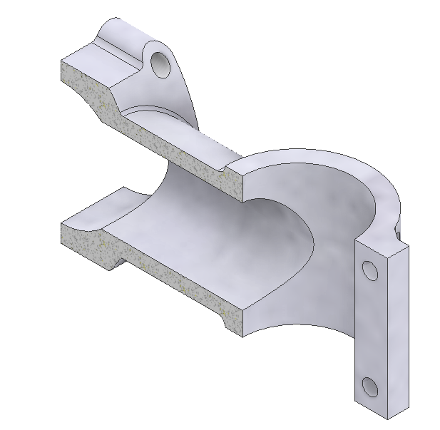
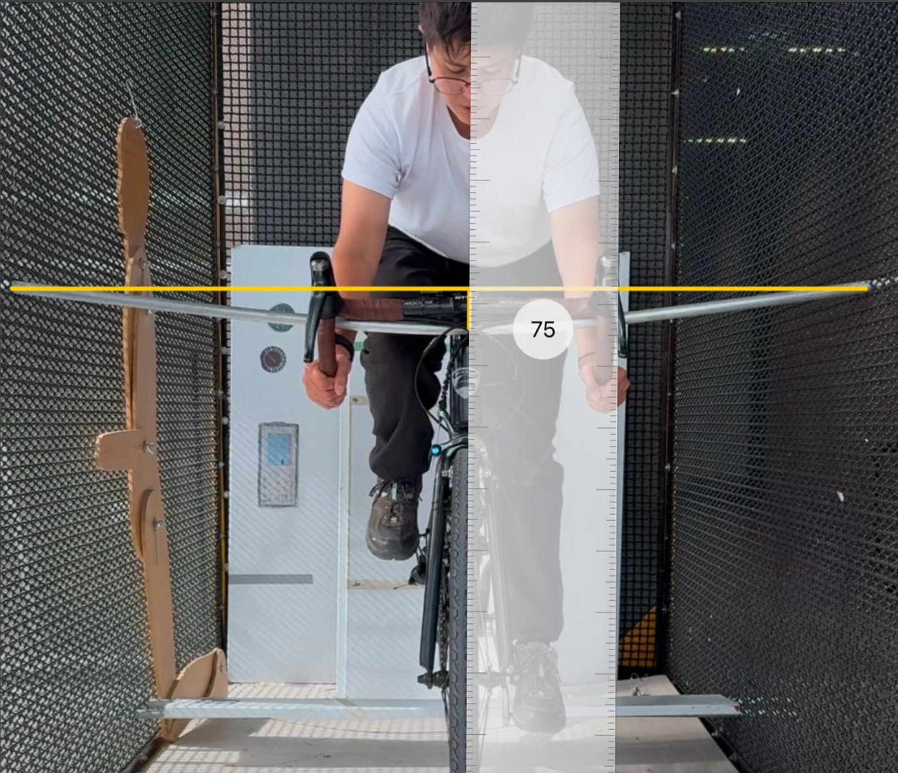
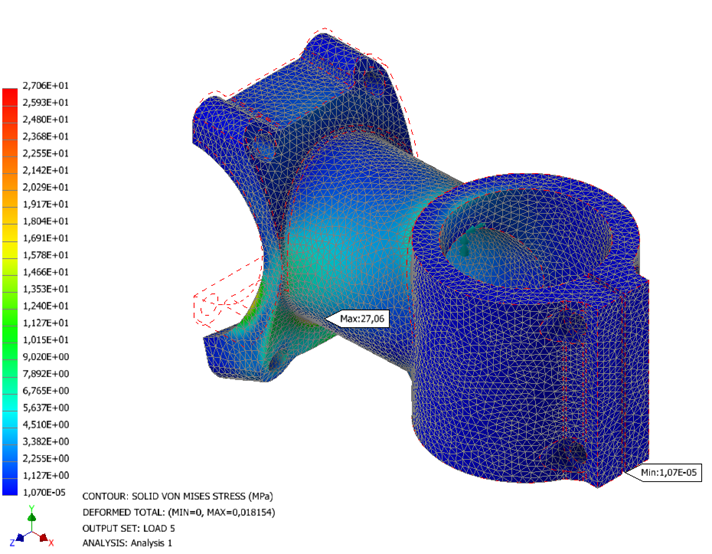
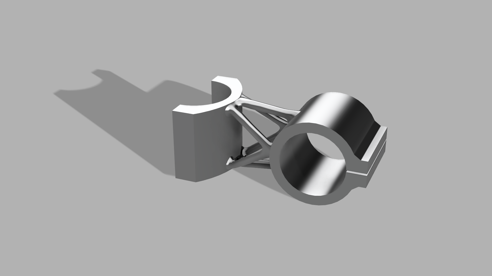

Proyecto destacado
POTENCIA DE BICICLETA EN ZAMAK 3: DEL ANÁLISIS ERGONÓMICO A LA FUNDICIÓN Y AL DISEÑO GENERATIVO
Resumen
Proyecto en equipo de Procesos de Manufactura I (Universidad Nacional de Colombia). Diseñamos una potencia de bicicleta fundida en Zamak 3 en molde de yeso: definimos su geometría con un análisis biomecánico, medimos experimentalmente la carga que soporta, la dimensionamos con el criterio de Goodman, la verificamos por elementos finitos en estática y fatiga y calculamos su sistema de colada. Después continué por mi cuenta explorando una versión optimizada con diseño generativo en Fusion 360.

Objetivo y contexto
Nuestro objetivo fue diseñar una potencia de bicicleta, la pieza que une el manillar con el tubo de dirección y define la postura del ciclista, y fabricarla por fundición en molde de yeso. Este proceso da buena precisión dimensional y buen acabado superficial, aunque el yeso solo soporta metales de bajo punto de fusión. Por eso elegimos Zamak 3, una aleación de zinc con aluminio, magnesio y cobre.
El trabajo se desarrolló en dos etapas: primero el diseño y la verificación de la pieza y después el diseño de su sistema de colada.
Análisis ergonómico
Hicimos un estudio biomecánico (bike fitting) a un ciclista de BMC, ubicado en el percentil 5 de la población masculina colombiana. Medimos los ángulos corporales con el software RULER de Ergonautas y los comparamos con los ángulos de confort de ciclistas de alto rendimiento:
- Ángulo del tronco respecto a la horizontal: medido 39°, ideal 38°.
- Ángulo de los brazos respecto al tronco: medido 77°, ideal 82°.
El tronco ya estaba muy cerca del ideal. La diferencia en los brazos se puede corregir con una leve rotación del manillar, sin cambiar la potencia. Con base en esto definimos una potencia de 60 mm de longitud y ángulo neutro.
Estimación de la carga

Para estimar la carga real sobre la potencia montamos una jaula de análisis ergonómico con tubos de aluminio 6061 (longitud de 1,5 m, diámetro exterior de 19 mm, diámetro interior de 17 mm, E = 69 GPa) que inmovilizaron la bicicleta mientras se pedaleaba. Medimos la deflexión de la barra de apoyo (0,069 m) y planteamos un diagrama de cuerpo libre y la ecuación universal de la curva elástica.
Al resolver el sistema obtuvimos una fuerza sobre la potencia de 304 N (y un ángulo de 0,00105 rad en el apoyo). Esa fuerza equivale a aproximadamente el 56 % del peso del ciclista (55 kg, unos 540 N), dentro del rango recomendado del 40 % al 60 % para que la potencia no se sobrecargue.
Dimensionamiento de la pieza
Modelamos la carga como un ciclo de flexión: una fuerza media de 304 N y una fuerza máxima de 608 N, lo que da un momento flector medio y uno alternante (con un brazo de 60 mm). Para dimensionar usamos el criterio de Goodman modificado:
σa / Se + σm / Sut = 1 / n
con un factor de diseño n = 3 y las propiedades del Zamak 3: resistencia última Sut = 285 MPa y límite de fatiga Se = 48 MPa. Los esfuerzos se calcularon con la ecuación de flexión σ = M·c/I para una sección tubular. Resolvimos el diámetro necesario con un script en MATLAB y obtuvimos un diámetro exterior de 34,98 mm y un diámetro interior de 31,8 mm, con 60 mm de longitud.
Diseño de la pieza
Modelamos la potencia en Autodesk Inventor con espesores casi uniformes para facilitar la fundición, lo que evita acumulaciones de material y favorece una solidificación homogénea. El conjunto se une con tornillos DIN 912 M4 de 16 y 20 mm.
Verificación por elementos finitos


Hicimos dos análisis en Inventor con la carga de 304 N:
- Estático: el esfuerzo máximo de Von Mises es de 18,21 MPa, cerca del punto de aplicación de la carga, unas 15 veces menor que la resistencia última del Zamak 3 (285 MPa). No se espera falla por sobrecarga.
- Fatiga: con la curva S-N del Zamak 3 y un ciclo de carga que representa el uso real (el ciclista se monta y se baja de la bicicleta), el esfuerzo máximo es de 27,06 MPa, por debajo del límite de fatiga de 48 MPa, con un margen de aproximadamente 1,8.
Diseño del sistema de colada

Calculamos el sistema para una pieza de 49.868 mm³ (área de 14.387 mm²) con una masa a colar de 0,40 kg, usando una densidad de 6,6 × 10^-6 kg/mm³ para el Zamak 3.
- Módulos de solidificación: cilindro vertical 3,30 mm, cilindro horizontal 3,87 mm y medio cilindro 3,02 mm. Como son mayores que 1, se necesita una mazarota (criterio de Chvorinov).
- Mazarota: una sola, de geometría de barra y módulo 4, mayor que el de todas las secciones para que sea la última en solidificar. Diámetro de 24,0 mm, distancia de alimentación de 12,0 mm y volumen de 10.851 mm³. La contracción estimada de la pieza es de 1.496 mm³ (aproximadamente 3 %).
- Tiempo óptimo de llenado (OFT): 1,40 s, con un espesor medio de 4 mm y un factor de 1,2.
- Área de choque: 146,6 mm². La relación de áreas del sistema es 1 : 2 : 2 (bebedero : canal : entradas).
- Bebedero: diámetro inferior de 13,7 mm y superior de 17,1 mm.
- Canal principal de sección trapezoidal: 14,0 mm × 21,0 mm.
- Entradas: tres, de 4,9 mm × 19,8 mm, ubicadas en las zonas de mayor espesor. Inicialmente planteamos dos, pero al evaluar una tercera vimos que el llenado era más uniforme.
- Macho: se usa un macho para formar las cavidades internas de la pieza, lo que reduce el material utilizado y el mecanizado posterior.
- Flujo: el número de Reynolds en el canal es de aproximadamente 25.900, ligeramente por encima del rango de referencia (2.000 a 20.000), por lo que queda como punto a ajustar. Para reducirlo, en la segunda iteración ubicamos la mazarota a nivel de la línea media del sistema, lo que disminuye la cabeza de presión.
Diseño generativo


Planteamiento: una vez terminada la entrega del curso, decidí por mi cuenta seguir experimentando con el proyecto. El primer avance es una exploración de diseño generativo en Autodesk Fusion 360. Partí de los mismos parámetros de diseño del informe: material Zamak 3, cargas de 304 N (media) y 608 N (máxima), factor de diseño de 3 y los 60 mm de longitud de la potencia.
Conservé las dos zonas funcionales de la pieza, la sujeción del tubo de dirección (abrazadera cerrada con ranura de apriete) y la sujeción del manillar (semicilindro), y dejé que el algoritmo generara la estructura que las conecta, en lugar del cuerpo tubular central del diseño original.
Resultado: una estructura orgánica de ramificaciones que sigue las trayectorias de carga. En la vista frontal se aprecian tres ramas que parten de la zona del manillar y se abren hacia la abrazadera. La lógica es dejar material solo donde el esfuerzo lo exige, lo que abre la posibilidad de reducir la masa de la pieza frente a la versión fundida.
Estado: es un avance de diseño y todavía se puede optimizar mucho más, por ejemplo refinando las restricciones y los objetivos del estudio, los espesores mínimos y el número de ramas. El siguiente paso es contrastar la geometría generada con el mismo flujo de análisis del proyecto original (elementos finitos estáticos y de fatiga) y definir la ruta de fabricación adecuada para una forma orgánica como esta (por ejemplo, manufactura aditiva).
Resultados y conclusiones
- La potencia soporta la carga estimada de 304 N en condiciones estáticas y cíclicas, con esfuerzos máximos de 18,21 MPa (estático) y 27,06 MPa (fatiga), muy lejos de los límites del Zamak 3.
- Medir la carga con un ensayo propio, en lugar de suponerla, nos dio más confianza en el diseño. El porcentaje de peso obtenido (56 %) coincide con los valores recomendados.
- El sistema de colada, con una mazarota, tres entradas y un macho, permite llenar la pieza y evitar el rechupe. Los cálculos son una buena aproximación, pero no son del todo concluyentes: el proceso real tiene variaciones de materiales y tolerancias que no capturan, por lo que habría que complementarlos con pruebas experimentales.
- Dadas las dimensiones pequeñas y la geometría compleja, concluimos que fabricar el modelo por impresión 3D o prototipado rápido es la opción más adecuada para validar y ajustar el diseño antes de producir.
Trabajo futuro
- Fabricar el modelo por impresión 3D o prototipado rápido y construir el molde de yeso para fundir una pieza de prueba y contrastar el sistema de colada con el resultado real (porosidad y rechupe).
- Ampliar el análisis de fatiga y considerar la torsión.
- Ajustar las dimensiones del sistema de colada para llevar el número de Reynolds al rango de referencia.
- Seguir optimizando el diseño generativo y validarlo por elementos finitos.
Herramientas
Autodesk Inventor · Autodesk Fusion 360 · MATLAB · Excel · RULER · Análisis de fatiga · Criterio de Goodman · Curva S-N · Método de módulos de Chvorinov